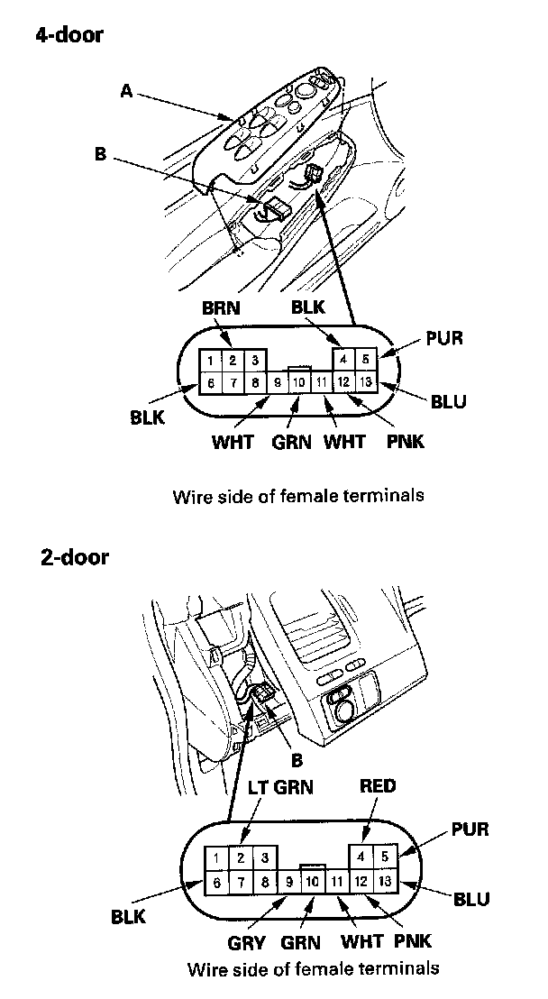

Initial Inspection and Diagnostic Overview
Power MirrorsFunction Test

1. 4-door: Remove the power window master switch (A).
2-door: Remove the driver's dashboard lower cover.
2. Disconnect the 13P connector (B) from the power mirror switch.
3. Choose the appropriate test based on the symptom:
- Both mirrors don't work, go to step 4.
- Left mirror doesn't work, go to step 6.
- Right mirror doesn't work, go to step 7.
Both mirrors
4. Check for voltage between the No.2 terminal and body ground with the ignition switch ON (II).
There should be battery voltage.
- If there is no battery voltage, check for:
- Blown No. 36 (10 A) fuse in the under-dash fuse/relay box.
- An open in the BRN (or PUR) wire.
- If there is battery voltage, go to step 5.
*:2-door
5. Check for continuity between the No.6 terminal and body ground.
There should be continuity.
- If there is no continuity, check for:
- An open in the BLK wire.
- Poor ground (G 503, G501).
- If there is continuity, check both mirrors individually as described in the next steps.
*: 2-door
Left mirror
6. Connect the No.2 and No. 10 terminals, and the No.5 (or No. 12) and No.6 terminals with jumper wires.
The left mirror should tilt down (or swing left) with the ignition switch ON (II).
- If the left mirror does not tilt down (or does not swing left), check for an open in the PUR (or PNK) wire between the left mirror and the 13P connector.
- If the wire is OK, check the left mirror actuator.
- If the mirror neither tilts down nor swings left, repair the GRN wire.
- If the mirror works properly, check the mirror switch.
Right mirror
7. Connect the No.2 and No. 11 terminals, and the No.5 (or No. 13) and No.6 terminals with jumper wires. The right mirror should tilt down (or swing left) with the ignition switch ON (II).
- If the mirror does not tilt down (or does not swing left), check for an open in the PUR (or BLU) wire between the right mirror and the 13P connector. If the wire is OK, check the right mirror actuator.
- If the mirror neither tilts down nor swings left, repair the WHT wire.
- If the mirror works properly, check the mirror switch.